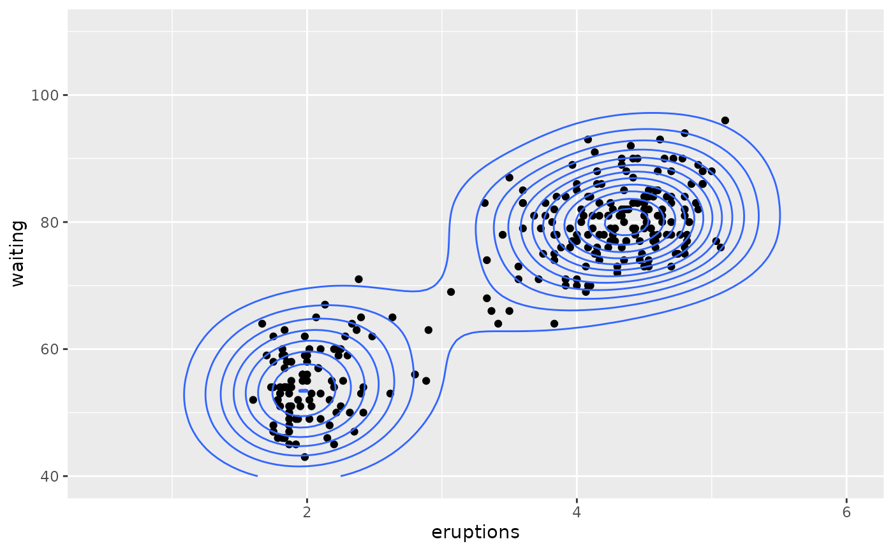
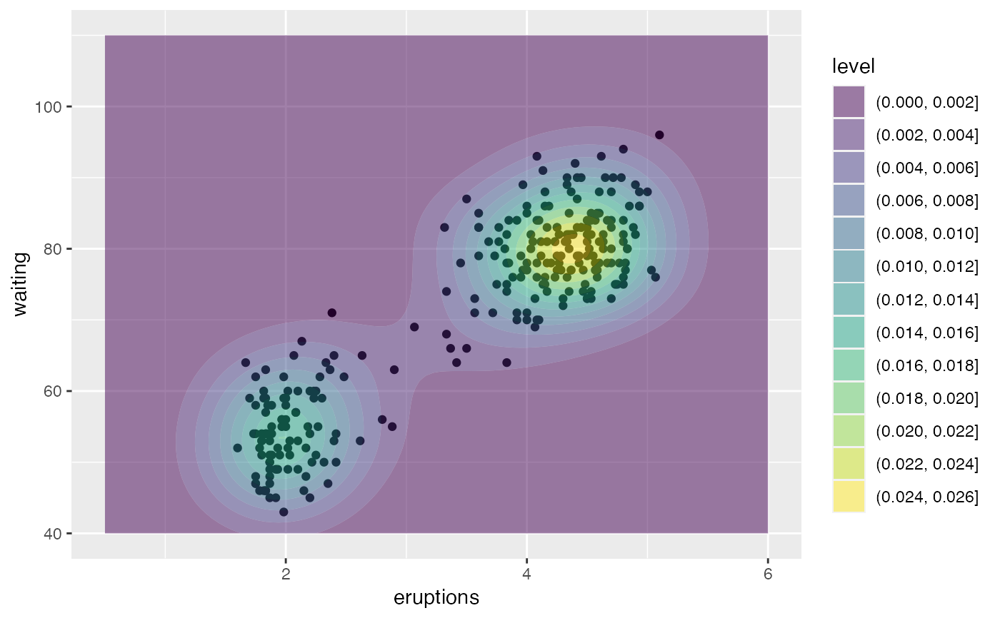
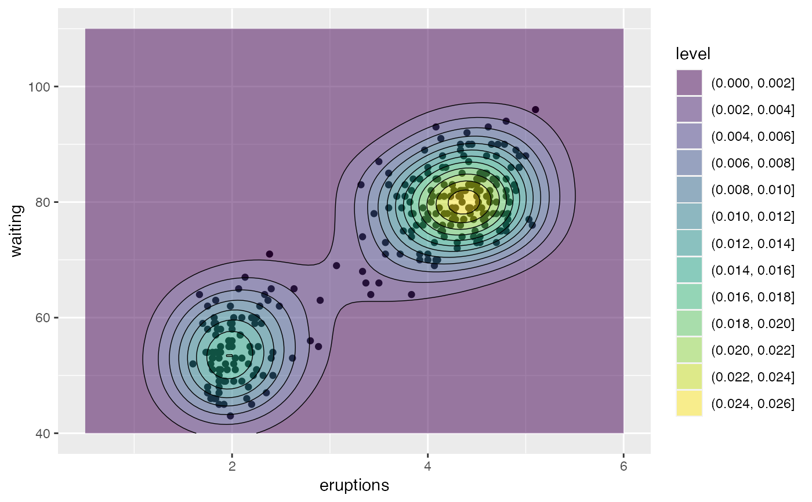
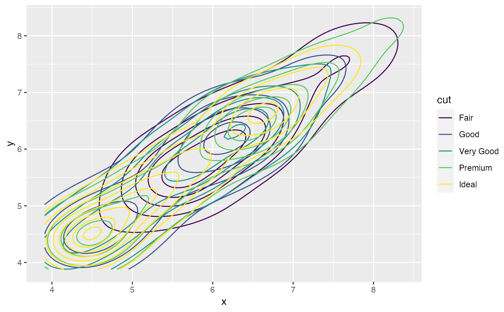
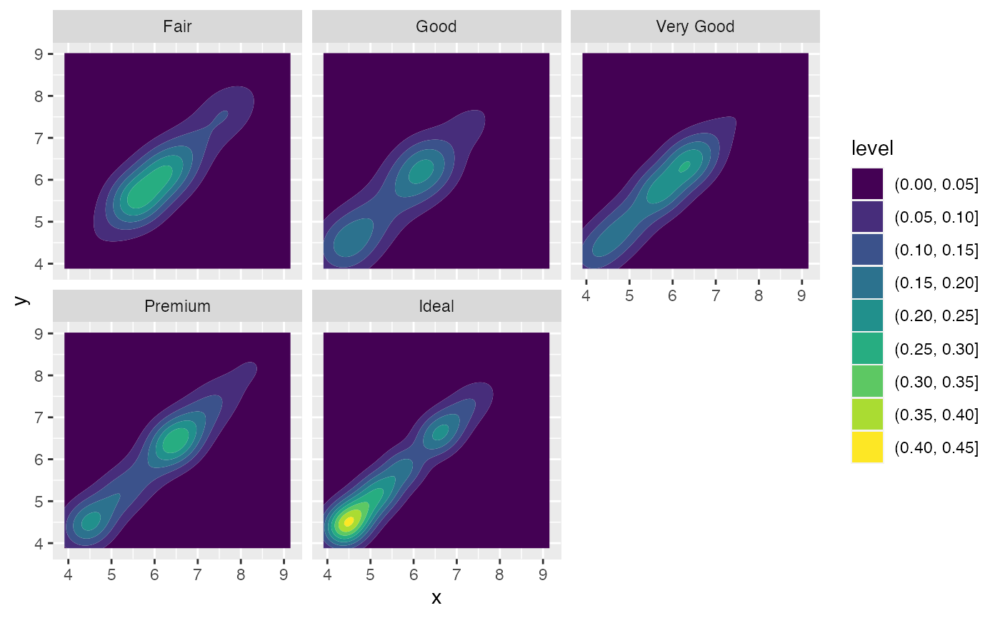
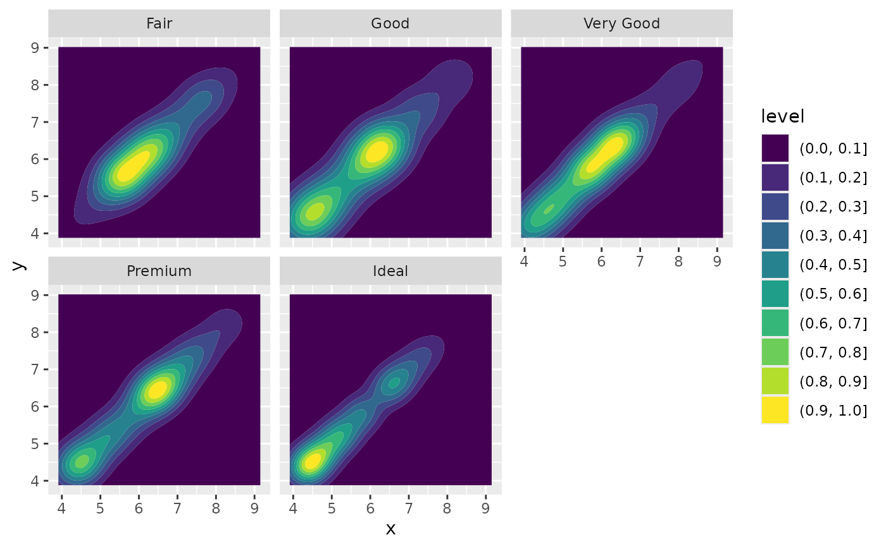
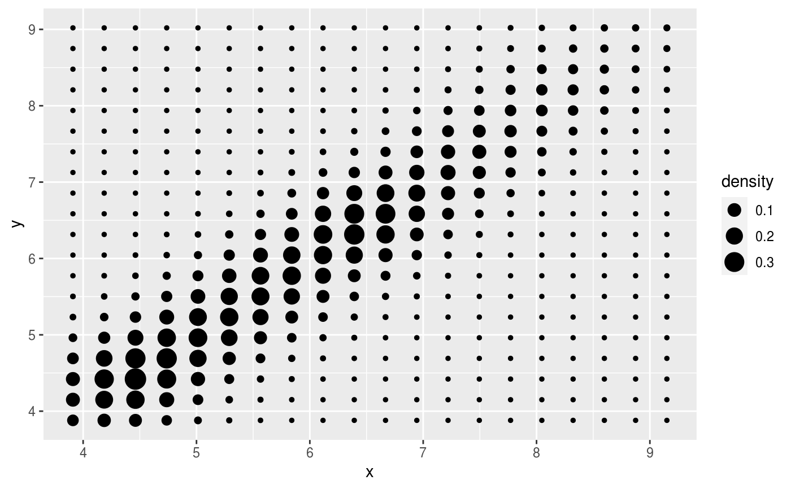
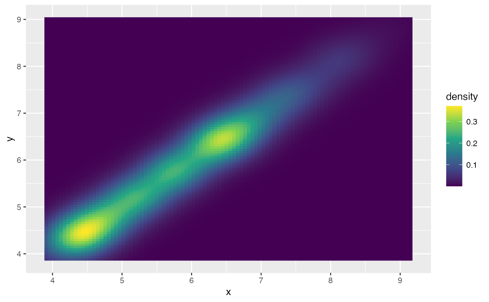
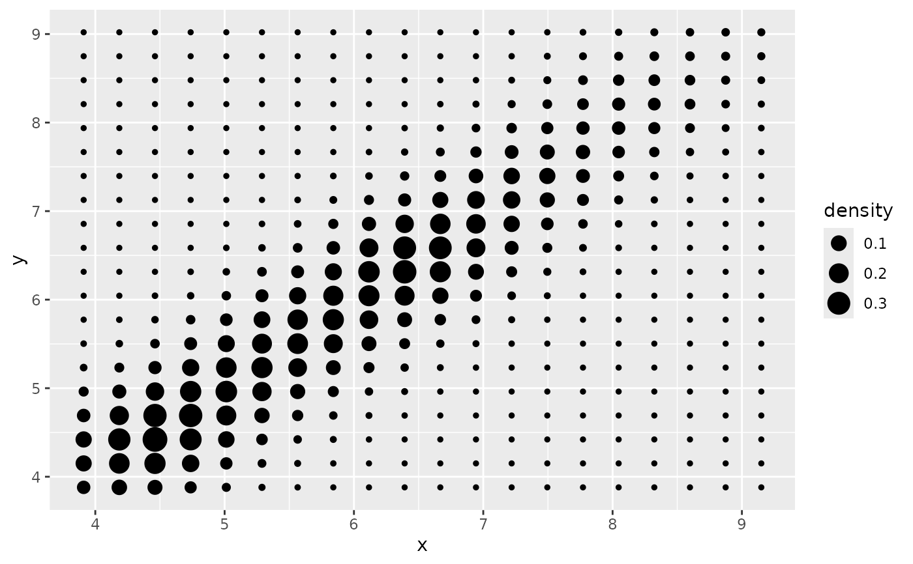

Contours of a 2D density estimate
Source:R/geom-density2d.r, R/stat-density-2d.r
geom_density_2d.RdPerform a 2D kernel density estimation using MASS::kde2d() and
display the results with contours. This can be useful for dealing with
overplotting. This is a 2D version of geom_density(). geom_density_2d()
draws contour lines, and geom_density_2d_filled() draws filled contour
bands.
Usage
geom_density_2d(
mapping = NULL,
data = NULL,
stat = "density_2d",
position = "identity",
...,
contour_var = "density",
lineend = "butt",
linejoin = "round",
linemitre = 10,
na.rm = FALSE,
show.legend = NA,
inherit.aes = TRUE
)
geom_density_2d_filled(
mapping = NULL,
data = NULL,
stat = "density_2d_filled",
position = "identity",
...,
contour_var = "density",
na.rm = FALSE,
show.legend = NA,
inherit.aes = TRUE
)
stat_density_2d(
mapping = NULL,
data = NULL,
geom = "density_2d",
position = "identity",
...,
contour = TRUE,
contour_var = "density",
n = 100,
h = NULL,
adjust = c(1, 1),
na.rm = FALSE,
show.legend = NA,
inherit.aes = TRUE
)
stat_density_2d_filled(
mapping = NULL,
data = NULL,
geom = "density_2d_filled",
position = "identity",
...,
contour = TRUE,
contour_var = "density",
n = 100,
h = NULL,
adjust = c(1, 1),
na.rm = FALSE,
show.legend = NA,
inherit.aes = TRUE
)Arguments
- mapping
Set of aesthetic mappings created by
aes(). If specified andinherit.aes = TRUE(the default), it is combined with the default mapping at the top level of the plot. You must supplymappingif there is no plot mapping.- data
The data to be displayed in this layer. There are three options:
If
NULL, the default, the data is inherited from the plot data as specified in the call toggplot().A
data.frame, or other object, will override the plot data. All objects will be fortified to produce a data frame. Seefortify()for which variables will be created.A
functionwill be called with a single argument, the plot data. The return value must be adata.frame, and will be used as the layer data. Afunctioncan be created from aformula(e.g.~ head(.x, 10)).- position
Position adjustment, either as a string naming the adjustment (e.g.
"jitter"to useposition_jitter), or the result of a call to a position adjustment function. Use the latter if you need to change the settings of the adjustment.- ...
Arguments passed on to
geom_contourbinwidthThe width of the contour bins. Overridden by
bins.binsNumber of contour bins. Overridden by
breaks.breaksOne of:
Numeric vector to set the contour breaks
A function that takes the range of the data and binwidth as input and returns breaks as output. A function can be created from a formula (e.g. ~ fullseq(.x, .y)).
Overrides
binwidthandbins. By default, this is a vector of length ten withpretty()breaks.
- contour_var
Character string identifying the variable to contour by. Can be one of
"density","ndensity", or"count". See the section on computed variables for details.- lineend
Line end style (round, butt, square).
- linejoin
Line join style (round, mitre, bevel).
- linemitre
Line mitre limit (number greater than 1).
- na.rm
If
FALSE, the default, missing values are removed with a warning. IfTRUE, missing values are silently removed.- show.legend
logical. Should this layer be included in the legends?
NA, the default, includes if any aesthetics are mapped.FALSEnever includes, andTRUEalways includes. It can also be a named logical vector to finely select the aesthetics to display.- inherit.aes
If
FALSE, overrides the default aesthetics, rather than combining with them. This is most useful for helper functions that define both data and aesthetics and shouldn't inherit behaviour from the default plot specification, e.g.borders().- geom, stat
Use to override the default connection between
geom_density_2d()andstat_density_2d().- contour
If
TRUE, contour the results of the 2d density estimation.- n
Number of grid points in each direction.
- h
Bandwidth (vector of length two). If
NULL, estimated usingMASS::bandwidth.nrd().- adjust
A multiplicative bandwidth adjustment to be used if 'h' is 'NULL'. This makes it possible to adjust the bandwidth while still using the a bandwidth estimator. For example,
adjust = 1/2means use half of the default bandwidth.
Aesthetics
geom_density_2d() understands the following aesthetics (required aesthetics are in bold):
xyalphacolourgrouplinetypelinewidth
Learn more about setting these aesthetics in vignette("ggplot2-specs").
geom_density_2d_filled() understands the following aesthetics (required aesthetics are in bold):
xyalphacolourfillgrouplinetypelinewidthsubgroup
Learn more about setting these aesthetics in vignette("ggplot2-specs").
Computed variables
stat_density_2d() and stat_density_2d_filled() compute different
variables depending on whether contouring is turned on or off. With
contouring off (contour = FALSE), both stats behave the same, and the
following variables are provided:
densityThe density estimate.
ndensityDensity estimate, scaled to a maximum of 1.
countDensity estimate * number of observations in group.
nNumber of observations in each group.
With contouring on (contour = TRUE), either stat_contour() or
stat_contour_filled() (for contour lines or contour bands,
respectively) is run after the density estimate has been obtained,
and the computed variables are determined by these stats.
Contours are calculated for one of the three types of density estimates
obtained before contouring, density, ndensity, and count. Which
of those should be used is determined by the contour_var parameter.
Dropped variables
zAfter density estimation, the z values of individual data points are no longer available.
If contouring is enabled, then similarly density, ndensity, and count
are no longer available after the contouring pass.
See also
geom_contour(), geom_contour_filled() for information about
how contours are drawn; geom_bin2d() for another way of dealing with
overplotting.
Examples
m <- ggplot(faithful, aes(x = eruptions, y = waiting)) +
geom_point() +
xlim(0.5, 6) +
ylim(40, 110)
# contour lines
m + geom_density_2d()

# \donttest{
# contour bands
m + geom_density_2d_filled(alpha = 0.5)

# contour bands and contour lines
m + geom_density_2d_filled(alpha = 0.5) +
geom_density_2d(size = 0.25, colour = "black")

set.seed(4393)
dsmall <- diamonds[sample(nrow(diamonds), 1000), ]
d <- ggplot(dsmall, aes(x, y))
# If you map an aesthetic to a categorical variable, you will get a
# set of contours for each value of that variable
d + geom_density_2d(aes(colour = cut))

# If you draw filled contours across multiple facets, the same bins are
# used across all facets
d + geom_density_2d_filled() + facet_wrap(vars(cut))

# If you want to make sure the peak intensity is the same in each facet,
# use `contour_var = "ndensity"`.
d + geom_density_2d_filled(contour_var = "ndensity") + facet_wrap(vars(cut))

# If you want to scale intensity by the number of observations in each group,
# use `contour_var = "count"`.
d + geom_density_2d_filled(contour_var = "count") + facet_wrap(vars(cut))

# If we turn contouring off, we can use other geoms, such as tiles:
d + stat_density_2d(
geom = "raster",
aes(fill = after_stat(density)),
contour = FALSE
) + scale_fill_viridis_c()

# Or points:
d + stat_density_2d(geom = "point", aes(size = after_stat(density)), n = 20, contour = FALSE)

# }